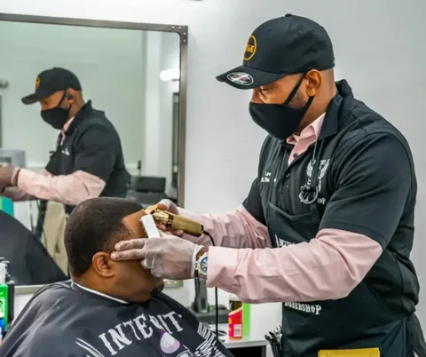
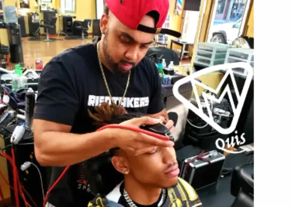
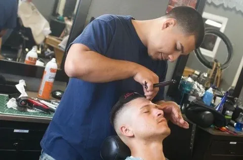
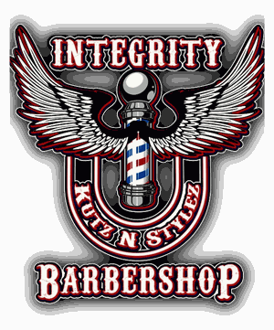

Card refinement
All three drop the "Barber" label. Pick the sub-line that earns its place — or none at all.
F1 — Specialty line
Their top two specialties where "Barber" was. Informative, unique to each guy.

Full-service · Cosmetology
F2 — Handle line
Their @handle in the trim color. Personal, promotes their page — but three barbers have no Instagram, so their cards would sit empty.

@m_m_quisdabeast
F3 — Number plate (recommended)
No sub-line at all. Name left, jersey number right in the trim color, brand line centered up top. The most "actual trading card" of the three — clean at every size, works for all eleven.

Card refinement
All three kill the scrollbar — nothing overflows, ever. They differ in what earns the space.
B1 — Stat sheet
Bio gone; every specialty gets its own stat row like a season line. Roomiest and most premium — but loses the personal sentence.

Official roster card 01/11B2 — Fitted bio (recommended)
Keeps the full bio, tuned so it fits without scrolling. Shown here with the longest bio on the roster at the narrowest card width the site ever renders — the worst case on the whole site.
A licensed barber and cosmetologist with more than 25 years behind the chair and over 21 years as a shop owner. Lewis delivers unrushed, full-service work built on quality and integrity.
Book with LewisB3 — Ghost number
Giant watermark number behind the stats, bio clamped to two lines. The most collectible-looking — but it cuts bios mid-sentence.
Marquis combines experience with a friendly chair-side approach, covering classic cuts, modern styles, and tailored finishing work.
Book with Marquis